医院案内
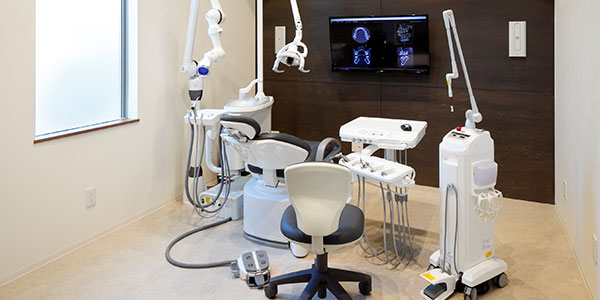
下新庄駅からすぐの歯科医院、「イクシマ歯科クリニック」は、お子さまからご年配の方まで
あらゆる世代の患者さまに通いやすい歯科医院です。
地域密着型の歯科医院として、地域の皆さまの歯の健康維持をサポートしています。
こちらでは当院の特徴をご紹介します。
「歯医者は怖い」「歯科治療は痛い」といったマイナスのイメージをお持ちの方、
当院では丁寧なお声がけ、痛みの少ない治療を心がけていますので、ぜひ安心してお越しください。
イクシマ歯科クリニックの設備紹介
外観
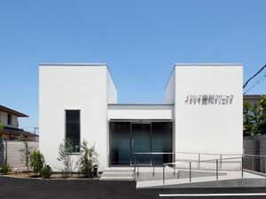
阪急電車の下新庄駅からすぐのところにあります。
受付
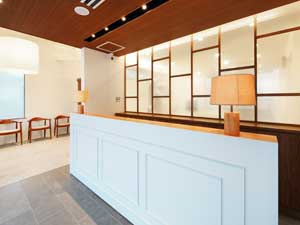
受付ではスタッフが笑顔で皆さまをお待ちしています。わからないことやご不安な点があれば、お気軽にお尋ねください。
待合室
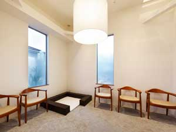
明るく清潔感のある待合室です。待合室内にキッズスペースもございますのでお子さまも安心してお待ちいただけます。
キッズスペース
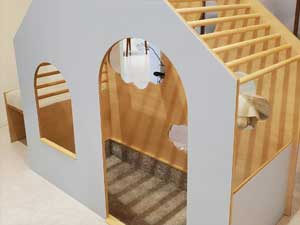
お子さまにとって歯医者さんが楽しいところと感じてもらえるように、キッズスペースをご用意しています。きちんと消毒していますので、安心してお過ごしください。
おむつ替え台
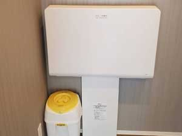
トイレ内におむつ替え台を設置しています。お子さまの急なおむつ替えも安心です。
診療室
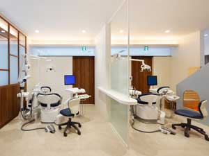
患者さまがリラックスして治療を受けていただけるようにデザインにこだわった内装です。院内感染を防ぐため、徹底的な衛生管理を心がけています。
診療ユニット
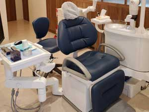
プライバシーの保護を配慮した診療ユニットで、落ち着いて治療を受けられます。モニター画面に映される口内写真やレントゲン写真を確認しながら、治療についての説明を受けることができます。
レントゲン
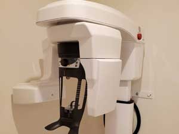
レントゲンを用いてお口全体の状態や骨の状態などをしっかり確認し、適切な診断に役立てています。
歯科用YAGレーザー
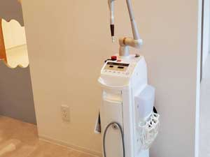
当院では、歯科用レーザーによる最先端の治療を採用しています。レーザー治療は、痛みと出血を軽減し患者様の身体への負担を少なくするほか、歯周病治療など、さまざまな治療に適用できます。
オートクレーブ
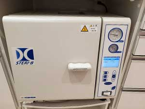
当院では医院の衛生管理を徹底しております。使用を終えた治療器具はこちらの高圧蒸気滅菌機にて滅菌から乾燥までを行います。 また、その後に菌が付着することのないよう、治療器具を殺菌照射灯のついたキャビネットへ保管致します。